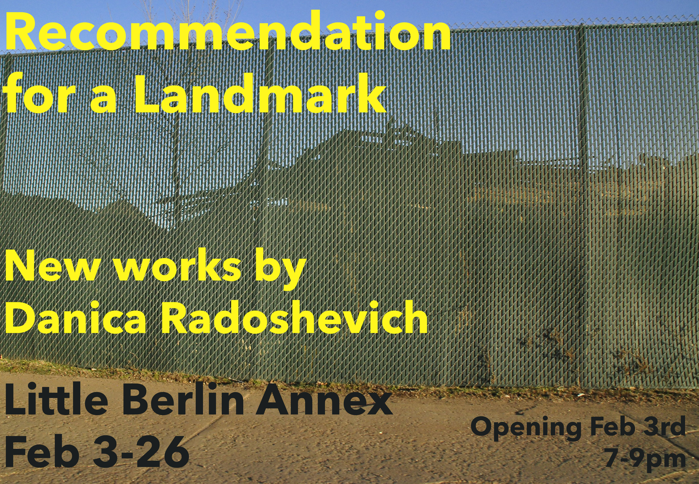

RECOMMENDATION FOR A LANDMARK: NEW WORKS BY DANICA RADOSHEVICH
February 2018
Saturday, February 3, 2018 7:00 PM 19:00 Monday, February 26, 2018 8:00 PM 20:00
Gallery Hours: Sundays 12 - 4pm + By Appointment
In Recommendation for a Landmark, Danica Radoshevich has created a body of work exploring the dissociative space of American motorways. Mining the forms of strip malls, roadways and construction signage, Radoshevich’s new pieces reflect on the structures made invisible through constant overexposure in daily urban life. Sitting in between painting, sculpture and installation, these artworks ask the audience to reconsider the mental geographies of banal lived experience, embracing a new context for the unassuming.
Curated by Little Berlin member Alex Schechter
__Little Berlin 2340 Coral Street Philadelphia, PA 19125 Littleberlin.org berlin.little@gmail.com
